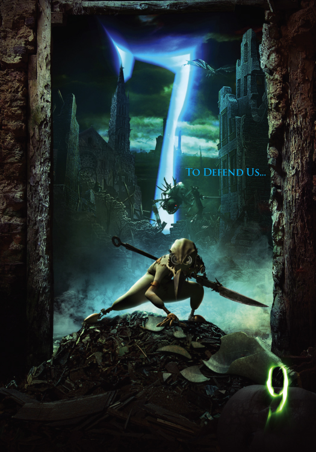
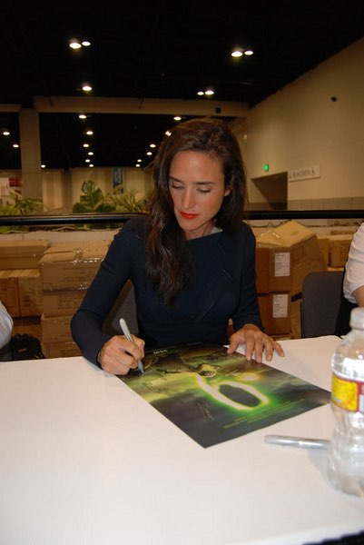

7 is the sole female of the group and she is a super cool warrior. She's super tough and voiced by Jennifer Connelly.
She can't stand 1's tactic of hiding all the time. Rather, she prefers to take the offensive and fight to protect her friends.
7 is armed with a large spear and protects her head with a bird skull helmet!
In addition to fighting off the beasts, she acts as a motherly figure to the twins. Go 7!
7 after rescuing 2, 5, and 9 from the catbeast.

Jennifer Connelly signs a 9 poster at a convention.